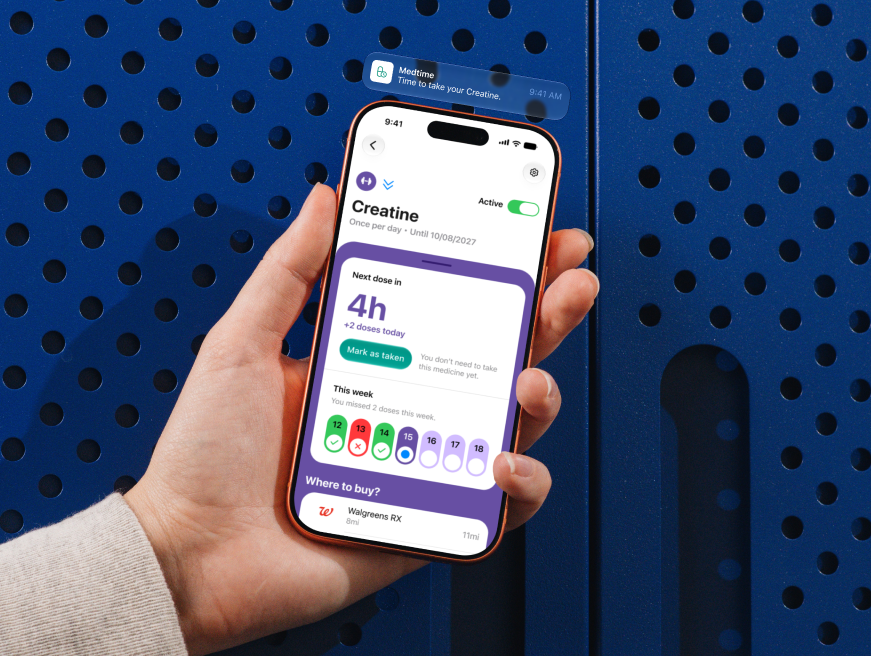
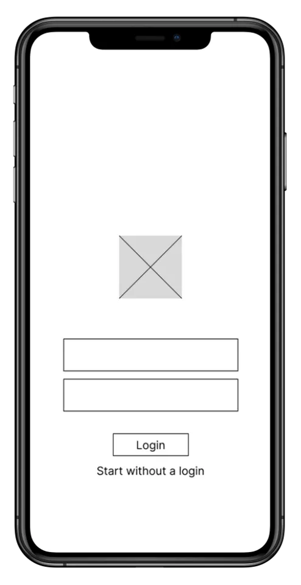
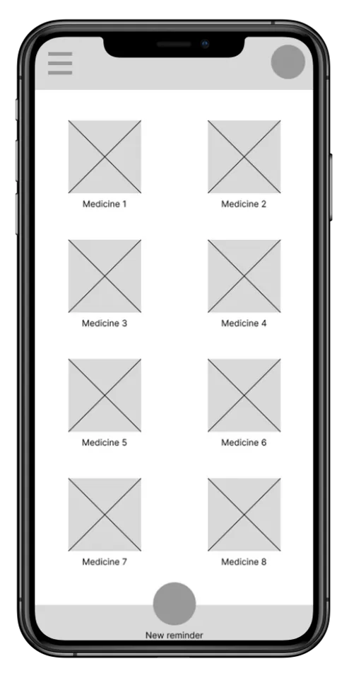
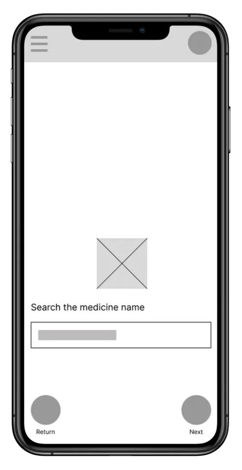
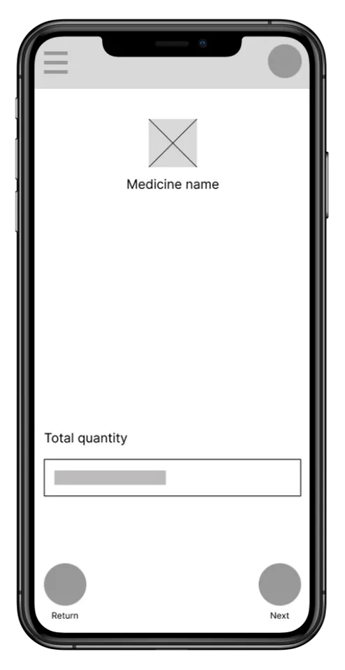
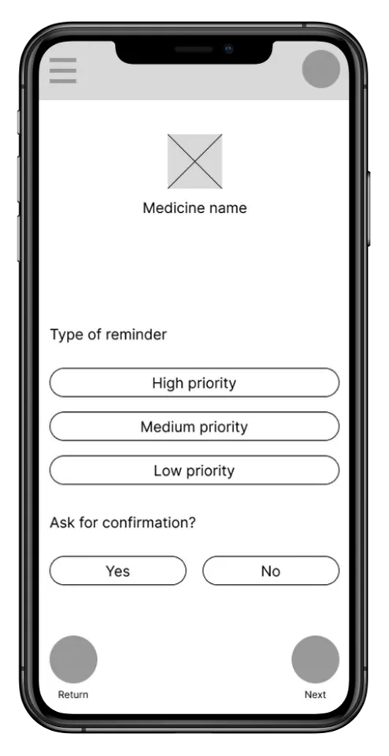
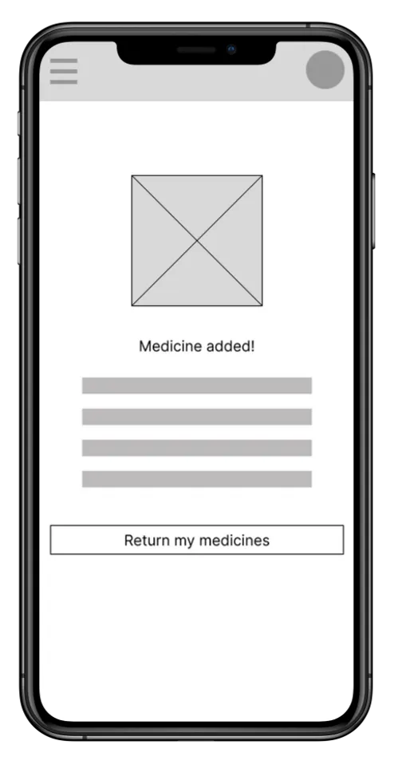

Personal / Study Case
Medtime Mobile App
A medication management app designed to help people organize treatments, build consistent routines, and manage changing schedules with less effort.
Role:
Product Designer
Tags:
Mobile
Study case
UX Research
Overview
Medication management is rarely a one-time task. Treatments change, doses repeat, and schedules need constant attention.
Medtime explores how a simpler, more flexible experience can help people manage these routines — from setting up reminders to tracking treatment progress and finding pharmacies.
The goal wasn't to add more features. It was to make everyday medication management require less effort.
The Challenge
Medication routines are more complex than reminders.
Most reminder experiences work well for simple schedules. But complexity grows when people need to manage multiple medications, recurring treatments, or different doses throughout the day.
This creates unnecessary setup work and makes routines harder to maintain.
The design challenge: How might we support different medication routines without making the experience harder to use?
Understanding users
Different routines. Different needs.
Research identified two user groups with distinct expectations around medication management.
| User Group | Primary Need | Pain Point |
|---|---|---|
| 👨🎓 Young Patients | Simple medication reminders | Reminder setup is too complex |
| 🏋️ Busy Professionals | Flexible recurring schedules | Need to recreate schedules every week |
Key takeaway: A single rigid scheduling pattern wouldn't work for everyone. Medtime needed to balance simple setup with enough flexibility to support more demanding routines.
Testing the first concepts
Validate the workflow before polishing the interface.
I created low-fidelity prototypes to explore the main medication management flows and test whether users could configure their routines easily.
Early usability testing exposed friction in three areas:
Scroll to view all






Early usability testing exposed friction in three areas:
Recurring medication
Users needed a dedicated way to manage treatments that repeat.
Multiple doses
Creating reminders one by one made setup unnecessarily time-consuming.
Schedule flexibility
Users expected more control over how their medication appeared in the calendar.
Testing also revealed an expectation beyond reminders: users wanted pharmacy recommendations after adding a prescription.
These findings shifted the focus from individual screens to the overall medication management workflow.
Refining UX
Turning feedback into design decisions
| Theme | Problem | Decision | Why |
|---|---|---|---|
| Make recurring treatments easier to manage | Recurring medication was difficult to distinguish from one-time reminders. | Introduce a dedicated area for recurring treatments and customizable categories. | Separate organization makes ongoing medication easier to find and manage, while categories let users structure treatments around their own routines. |
| Reduce repetitive reminder setup | Adding multiple doses required too many individual actions. | Allow users to configure multiple reminders from one screen and select common dosage patterns, such as three times per day. | Reduce repeated input without removing control over individual schedules. |
| Give users more control over scheduling | Different users preferred different ways to view their medication calendar. | Explore alternative calendar layouts and clearer schedule organization. | Medication schedules vary. The interface should adapt to users' routines rather than force everyone into one pattern. |
| Connect medication planning with pharmacy discovery | Users expected help finding pharmacies after creating a prescription. | Include pharmacy recommendations as part of the broader medication journey. | Consider what users need after setting up a reminder, not only the reminder itself. |
The redesigned experience
One place to manage changing routines
The high-fidelity prototype brought these decisions together into a more structured medication management experience.
Scroll to view all


Enhanced
Organization
A dedicated recurring medication section and customizable categories help users distinguish ongoing treatments and organize them around daily routines.
Enhanced
Scheduling
Users can create multiple reminders in one flow or choose common dosage patterns. This reduces repetitive setup while keeping scheduling flexible.
Track Your
Progress
A progress view helps users track dosage changes, follow treatment stages, and see upcoming adjustments — making ongoing medication routines easier to manage.
Outcome
Less effort across the medication journey.
Medtime evolved into a more complete medication management experience, addressing key usability issues around reminders, recurring treatments, and scheduling.
The result connects medication organization, treatment progress, and pharmacy discovery — making everyday tasks simpler and more intuitive.
2
User groups identified
3
Usability issues uncovered
4
Key experience areas improved
1
Unified medication experience
1
Usability testing round
1
High-fidelity prototype
What I Learned
Good medication UX balances simplicity with flexibility. Early testing helped uncover workflow issues before visual refinement, reinforcing the value of designing around user behavior and the full journey — not just individual screens.